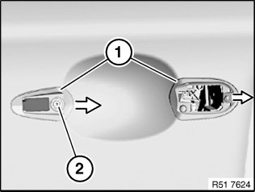
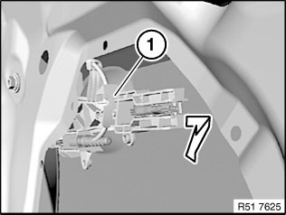
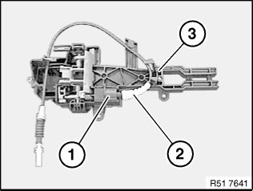

51 21 125 Removing And Installing/Replacing Carrier For Left Or Right Outside Door Handle With Lock Cylinder
51 21 125 Removing and installing/replacing carrier for left or right outside door handle with lock cylinder

Necessary preliminary tasks:
- Remove outer handle
- Remove sound insulation
- If necessary, close door window glass

Release Bowden cable (1) from door lock (2).
Installation:
Bowden cable (1) must be correctly engaged in locators in door lock (2).
Bowden cable (1) must be laid without kinks in bend to door lock (2).
IMPORTANT: Door can not be opened if Bowden cable (1) is incorrectly laid.

Remove seals (1) in direction of arrow.
Release screw (2).

If necessary, release cable holder on carrier (1).
Remove inner carrier (1) in direction of arrow and feed out of door.
Replacement:

If necessary, release cable connector (1).
Feed Bowden cable (2) out of carrier (3).